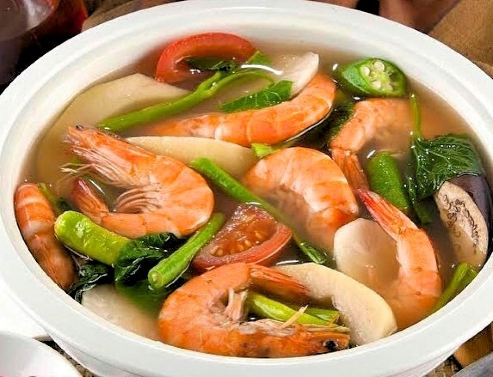

Sinigang

Sinigang is a sour and savory Filipino soup or stew that is traditionally
made with meat or seafood and vegetables, cooked in a broth made with
tamarind or other souring agents. It is a popular dish in the Philippines
and is often served as a main course for lunch or dinner.
The flavors of sinigang are bold and distinctive,
and the dish is typically garnished with a variety
of vegetables and herbs to add flavor and texture.
It is usually served with a side of rice.
Ingredients
- Meat or Seafood
- Vegetables
- Souring agent
- Broth
Steps
-
Rinse your choice of meat
(such as pork, beef, or seafood)
and set aside.
-
In a pot, bring about 6 cups of water
to boil. Add 1 sinigang mix packet
or aboutn 2 tablespoons of tamarind paste.
-
Add the meat to the port and let it cook
until tender. This should take about 20-30
minutes for pork, or 10-15 for seafood.
-
While the meat is cooking, prepare vegetables.
Sinigang is typically made with vegetables such as
radishes, okra, and eggplant.
-
Once the meat is cooked, add the vegetables to
the pot and let the cook until tender.
-
Serve the sinigang hot, with rice on the side.
Enjoy!